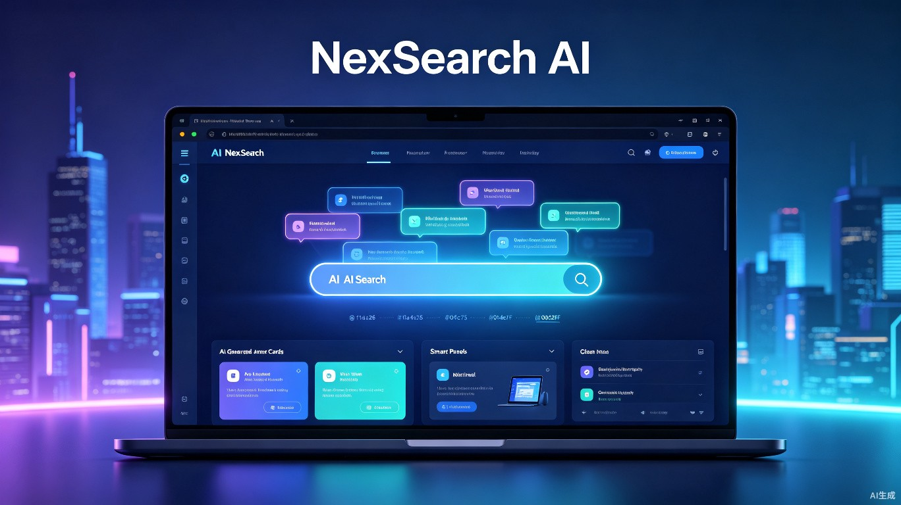
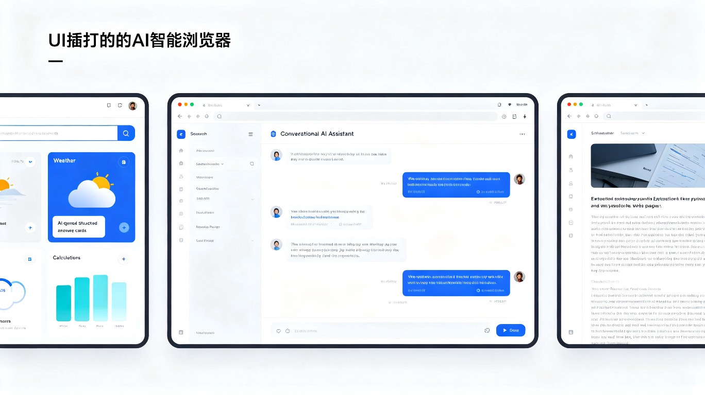

不只是搜索，更是你的 AI 知识伙伴。在浏览器中融合大语言模型能力，让每一次搜索都变成一次智能对话，一句话获得完整答案，告别海量链接的筛选烦恼。

搜索后直接生成结构化答案，而非一堆链接。AI 从多个来源综合信息，给出带引用来源的完整回答，包括数据、图表、对比分析等。
像和朋友聊天一样搜索。支持多轮对话追问，AI 记住上下文，帮你逐步深入探索问题，而不是每次都从零开始搜索。
打开任何网页，AI 自动生成内容摘要和关键信息提取。长文章一键总结，视频自动提取字幕要点，论文快速提炼核心观点。
基于你的兴趣和搜索习惯，自动聚合相关领域的新动态。像一个懂你的信息管家，主动推送你可能感兴趣的内容，而非被动等你搜索。

2026年FIFA世界杯由美国、加拿大、墨西哥联合举办，这是首次三国联合承办的世界杯。
巴西、法国、阿根廷、英格兰为夺冠热门，东道主美国队也备受关注。
6月11日开幕，决赛7月19日，共48支球队参赛，104场比赛。
| 功能维度 | 传统浏览器 | NexSearch AI |
|---|---|---|
| 搜索方式 | 关键词匹配 | 自然语言理解 + 语义搜索 |
| 搜索结果 | 蓝色链接列表 | AI 综合生成的结构化答案 |
| 信息筛选 | 用户手动逐个点开 | AI 自动聚合、交叉验证、去重 |
| 追问能力 | 重新搜索 | 多轮对话上下文记忆 |
| 内容摘要 | 无 | AI 自动生成网页/视频摘要 |
| 个性化 | 基于 Cookie 推荐 | AI 理解兴趣，主动推送有价值信息 |
| 隐私保护 | 数据追踪广告 | 本地优先 + 端到端加密 |
自然语言输入
NLU 模型解析
全网信息检索
LLM 生成答案
答案卡 + 来源
搜索一个学术问题，AI 直接给出包含论点、论据、引用的结构化回答，并生成思维导图辅助理解，大幅提升学习效率。
快速获取行业数据、竞品分析、市场报告的摘要，无需再花数小时翻阅资料。AI 帮你高效完成信息调研工作。
"哪个品牌的扫地机器人性价比最高？""附近的亲子餐厅哪家好？" AI 综合多方评价，直接给你可操作的决策建议。
描述旅行需求（时间、预算、偏好），AI 自动生成包含行程、住宿、交通、美食的完整攻略，还能根据反馈实时调整。
将搜索时间从分钟级缩短到秒级。一次提问获得完整答案，而非反复点击链接拼凑信息。对于每天搜索 5-10 次的用户，每周可节省约 2 小时。
不需要掌握"搜索技巧"，用自然语言描述需求即可。让老年人、儿童、非技术用户也能轻松获取高质量信息，弥合数字鸿沟。
不追踪用户行为、不出售搜索数据。采用端侧 AI + 匿名化处理，在提供个性化体验的同时保护用户隐私，重新定义浏览器的隐私标准。
基于现有大模型 API，实现核心的 AI 搜索体验：自然语言查询、结构化答案卡生成、多来源引用。采用浏览器扩展的形式快速上线，支持 Chrome / Edge 等主流浏览器。
引入对话式搜索体验，支持上下文记忆的多轮追问。同时上线网页智能摘要功能，自动为打开的页面生成内容摘要。开始训练专属小模型降低延迟。
推出基于 AI 理解的个性化信息聚合，主动推送有价值内容。开放插件生态，允许开发者构建自定义 AI 搜索插件，打造"AI 搜索应用商店"。